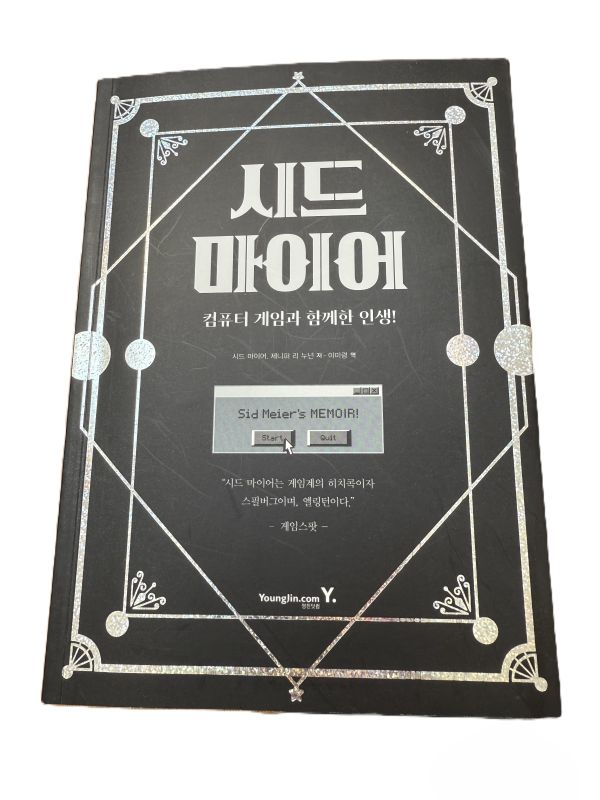

시드 마이어 : 컴퓨터 게임과 함께한 인생

저자: 시드 마이어
발행일: 2021년
문명 시리즈로 잘 알려진 게임 디자이너 시드 마이어의 자서전이다. 그는 이 책에서 자신의 게임 철학과 개발 과정, 그리고 인생에 대한 통찰을 담담하게 풀어낸다. 단순한 성공담이 아니라, 시행착오와 실패 속에서 얻은 배움까지 솔직하게 드러낸 것이 인상적이었다.
1. 아이디어보다 실행
- 가치는 아이디어 자체가 아니라 실행에 있다.
- 프로그래머 → 그래픽 디자이너 → 테스터 순으로 직접 역할을 맡아가며 아이디어를 구체화하고 검증하는 과정을 강조한다.
- 실패를 두려워하지 말고, 게임에 넣어보고 별로면 과감히 삭제하라는 태도가 인상적이다.
2. 흥미로운 결정
- 좋은 게임은 플레이어가 “다른 선택을 했더라면?”을 궁금해하도록 만든다.
- 플레이어가 자기 일처럼 고민하고 몰입할 수 있는 선택지를 제공해야 한다.
- 게임 디자인의 본질은 단순한 화려함이 아니라 흥미로운 결정을 만들어내는 것이라고 말한다.
3. 개선과 완성도의 과정
- 작업 중에는 한 걸음 물러서서 작품을 바라보며 구체적인 개선점을 찾는 것이 중요하다.
- 재미있는 부분과 그렇지 않은 부분을 구분하고, 반복적인 테스트를 통해 완성도를 높여야 한다.
- 이 과정에서 아이디어는 점점 다듬어지고, 작품은 완성에 가까워진다.
4. 게임의 본질
- 게임은 영화나 소설과 달리 양방향 소통을 가진 매체다.
- 플레이어의 선택과 행동이 곧 게임의 경험을 만들어낸다.
- 따라서 게임 디자이너는 기술적 화려함보다 플레이어의 경험에 집중해야 한다.
5. 창작자의 태도
- 상업적 성공만이 전부가 아니다. “내가 자랑스러워하는 작품”이 진짜 성공이다.
- 실패 또한 소중한 과정이며, 거기서 배운 점이 다음 도전을 가능하게 한다.
- 끝까지 밀고 나가며 최선을 다하는 것, 그리고 스스로 즐길 수 있는 과정이 중요하다.
느낀 점
이 책을 통해 단순히 게임 디자인 철학을 넘어, 창작과 삶에 임하는 태도를 배울 수 있었다. 아이디어보다 실행, 실패를 두려워하지 않는 용기, 그리고 플레이어의 경험에 집중하는 자세는 게임뿐 아니라 앞으로 내가 하는 모든 창작과 도전에도 적용할 수 있는 가치 있는 교훈이었다.